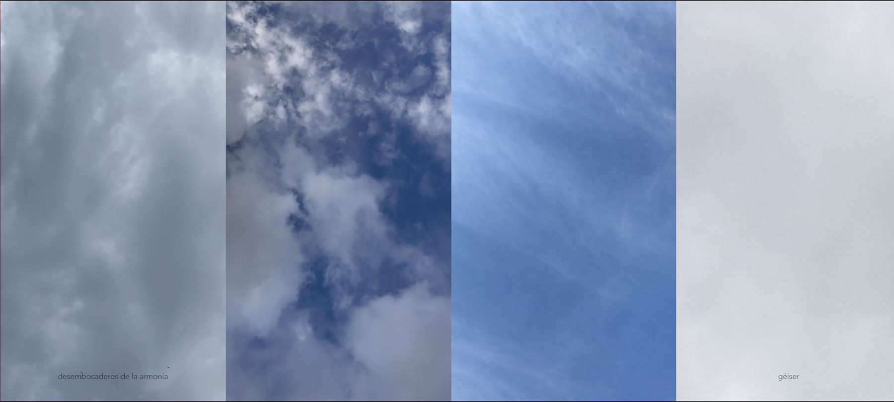

Mirar al cielo / 52 tonos de azul

Since the beginning of the quarantine, March 2020, I collect skies, my own skies, skies of friends from other cities in the world. We all look at the sky. What does the sky have to tell us? Using a neural network system with a long short-term memory (LSTM) architecture of recurrent neural network (RNN) and a convolutional neural network applied to mobile vision, the system of this work will interpret videos of skies from different parts of the world, generating a dialogue between skies and scientific and poetic texts. The skies say about colour theory, perspective, about the atmosphere, about astronomy, about explorations and travels, about meteorological phenomena, about ornithology, about geography, about looking at the sky, about the sky being looked.
The video installation version of the project is called 52 shades of blue and was exhibited at Fundación Andreani, Buenos Aires, Argentina, 2021; Jax District, BienalSur 2021, Riyadh, Saudi Arabia and Videoformes, Clermont-Ferrand, France, 2022.
Versions of the work are available in Spanish, English and French.
Text by Gabriela Golder
Links
Credits
- Idea and creation Gabriela Golder
- Neural network implementation Mario Guzmán
- Web development Lucas Medina
- General assistance Abel Cassanelli
- Translation Mariana Lombard
- Thanks for the skies to Paz Encina, Luciano Zubillaga, Hrair Sarkissian, Andres Hilarion, Claudia Joskowicz